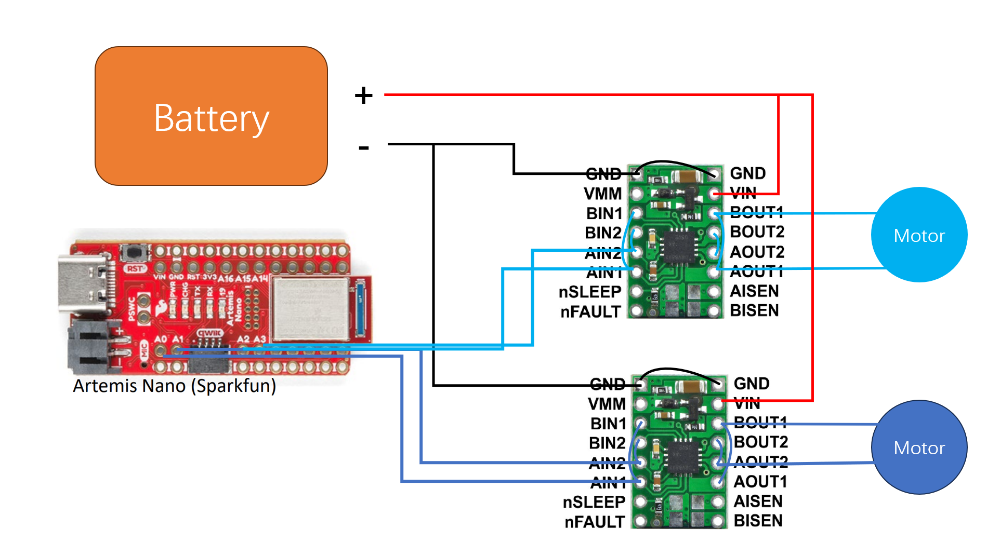
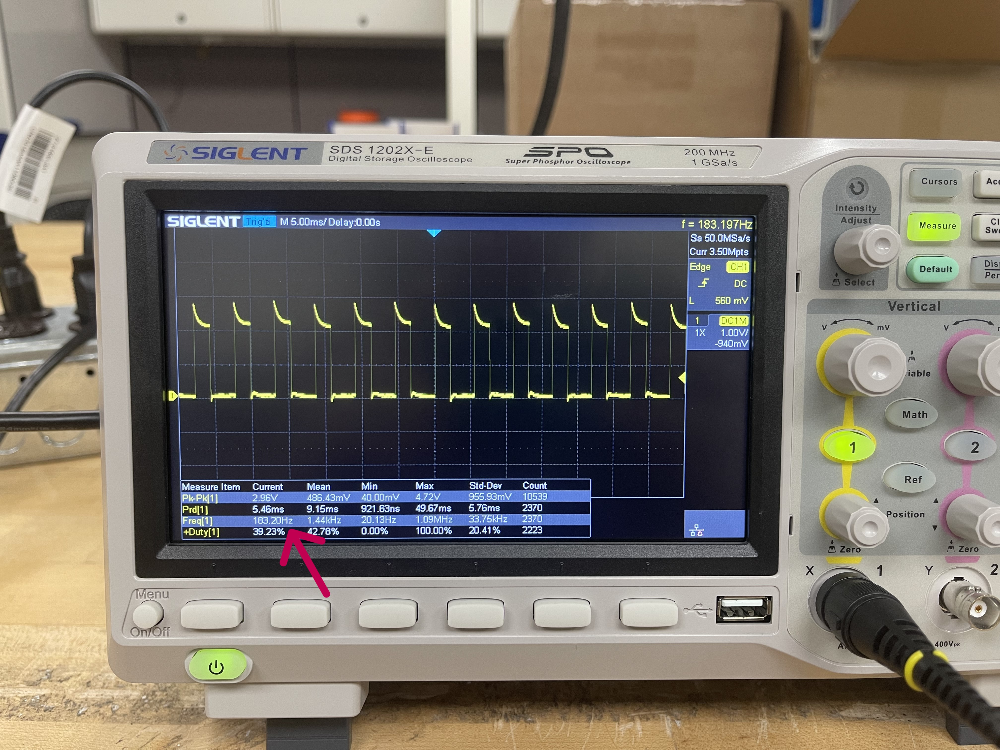

Objectives
This lab is to hook up the motors, DRV8833 drivers and the Artemis board. After installing all the components into the RC car, it is expected to perform open loop stright movements and turns. Here links to the datasheet of the DRV8833 dual channel motor driver.
Prelab
Intended Connection Schematic
Refer to the datasheet for the parallel connection:


The intended connection is shown below.

Battery Discussion
The reason to use a seperate battery to power the drivers is to isolate voltage fluctuations to the Artemis board. As can be seen in the Oscilliscope, the pins on the motors displays large peak-to-peak voltage even if there is a capacitor on each of the motors.
Task 1: Set Up and Oscilliscope Connection
After hooking up Artemis board and the driver input pins and connecting battery to the two drivers,
we test the waveshape of the input and output pins of the drivers.
We first test the waveshape from the input pins of the drivers.


Then, we test the waveshape from the output pins of the drivers.


If we give the driver a intermittent PWM signal, we can see the following result from the output pins.
Task 2: Power Supply Setting Discussion
Refer to the video in the previous task, it can be seen that the output pins of the drivers will show the same patterns as the input pins receives from the Artemis board. Thus the drivers are able to modulate the input signal to power the motors as PWM power supplies.
Task 3: Code Snippet for Motor Testing
The following code is to test the two motors in the forward and reverse directions.
#define MT1A1_PIN 1
#define MT1A2_PIN 0
#define MT2A1_PIN 2
#define MT2A2_PIN 3
void setup() {
Serial.begin(115200);
Serial.println("Motor Test");
// pinMode is not needed for PWM output
// NEW set pinmode for digital write
pinMode(MT1A1_PIN, OUTPUT);
pinMode(MT1A2_PIN, OUTPUT);
pinMode(MT2A1_PIN, OUTPUT);
pinMode(MT2A2_PIN, OUTPUT);
Serial.println("Set pin modes...");
}
void loop() {
// Test motor driver 1
Serial.println("Testing MT Drv 1: ");
Serial.println("MT1A1 200, MT1A2 0");
analogWrite(MT1A1_PIN, 200); // duty is 100/255
// digitalWrite(MT1A2_PIN, LOW); // motor 1 forward or fast decay
analogWrite(MT1A2_PIN, 0);
delay(2000);
// digitalWrite(MT1A1_PIN, LOW);
analogWrite(MT1A1_PIN, 0);
Serial.println("MT1A1 0, MT1A2 200");
analogWrite(MT1A2_PIN, 200); // motor 1 reverse or fast decay
delay(2000);
// digitalWrite(MT1A2_PIN, LOW); // coast mode (neutral)
analogWrite(MT1A2_PIN, 0);
delay(100);
// Test motor driver 2
Serial.println("Testing MT Drv 2: ");
Serial.println("MT2A1 200, MT2A2 0");
analogWrite(MT2A1_PIN, 200); // duty is 100/255
analogWrite(MT2A2_PIN, 0); // motor 1 forward or fast decay
delay(2000);
analogWrite(MT2A1_PIN, 0);
Serial.println("MT2A1 0, MT2A2 200");
analogWrite(MT2A2_PIN, 200); // motor 1 reverse or fast decay
delay(2000);
analogWrite(MT2A2_PIN, 0); // coast mode (neutral)
delay(100);
}
Task 4: Images of the Oscilliscope
Refer to Task 1.
Task 5: Video of Wheels Spinning as Expected (with code)
Using the code in Task 3, the motors will move following this sequence: "Right Wheels Reverse -> Right Wheels Forward -> Left Wheels Reverse -> Right Wheels Forward".
The PWM duty is \( \frac{100}{256} \approx 39.06 %\)
Task 6: Video of Both Wheels Running
Use analogWrite to give \( \frac{120}{256} \approx 46.88 %\) to both motors, the result is shown below.
Task 7: Picture of All Components Secured in the Car


Task 8: Lower Limit PWM Discussion
Firstly, the tested lower limit of duty to move forward is \( \frac{50}{256} \sim \frac{60}{256} \). See the video below. At analog 100,
the car needs external force to start moving, then it can move at a slow speed.
Below is the demo at \(\frac{50}{256} \).
The following is the demo at \( \frac{60}{256} \). The car can start moving without external force.
Task 9: Calibration of Two Motors
After experiments, a suitable calibration factor is \( 1.21 \) to be applied to the wheels on the right. The RC car can now go straight line in an open loop manner, as the video shown below.
Task 10: Open Loop Control Demo
The motion sequence: go straight for 2 seconds -> turn left for 1.4 seconds -> go straight for 2 seconds -> apply break (fast decay) -> rotation in place. The parameters of PWM duty should be fine-tuned in future uses.
Additional Task 1: analogWrite Frequency Discussion
The analogWrite function sets the duty of the PWM timer each time it is called. Normally the default frequency for the artemis apollo processors will be below 500Hz. We can change the
configurations of the timers manually to achieve higher PWM frequency.
Reference link for register configurations: click here.
In our practice, we can see the PWM frequency via the Oscilliscope, as shown below.

The red arrow in the above image points to the measured frequency of the actual output from the pin of Artemis, which is operating at \( 183.20Hz \).
Additional Task 2: Lowest PWM Speed (in motion) Discussion
TBD.
THE END